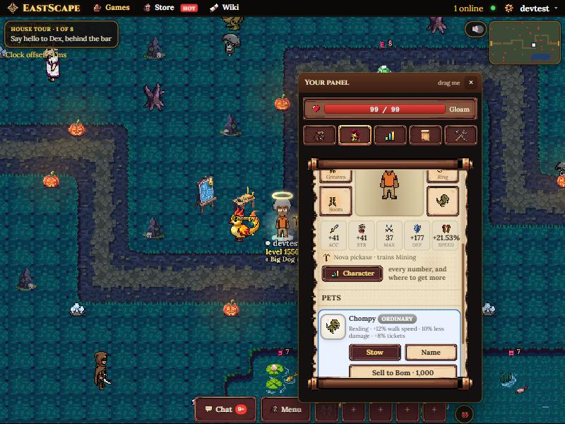
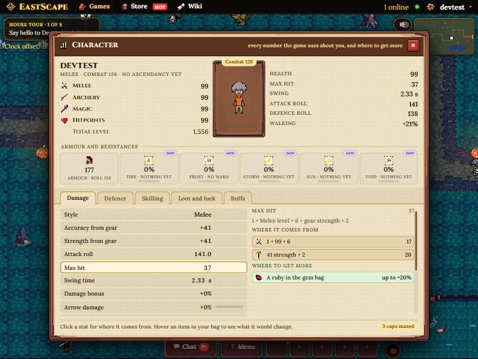
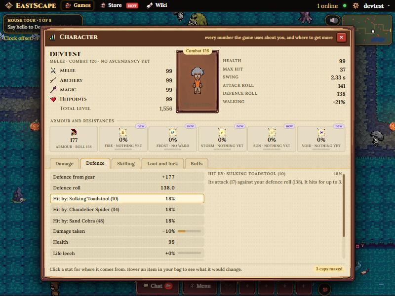

The Character window, in the game
Mockup 9 as a player would see it: the real page on the dev server, with the Character button added to the Equipment tab under the
combat strip, and the window built from nothing but the game's own window, tab, strip and button styles. The numbers are the dev character's,
worked out by the game's rules functions, so what you see is what the real thing would say. Try it yourself at
http://localhost:4321/eastscape.html?as=devtest&charmock=1, then press U for Equipment.

1 · The button. In the Equipment tab, right under the five combat numbers and the "what you're holding" line, the same small gold button the Skills tab uses for My stats.

2 · The window, Damage tab. Identity and levels on the left, the paper doll in the middle (the game's own frame), vitals on the right; then the armour-and-resistances strip (the resistances marked new, as proposed); then five tabs. Clicking a row shows where the number comes from and where to get more: here Max hit 37 is 1 + 99 ÷ 6 plus 41 strength ÷ 2, and a ruby would add up to 20%.

3 · Defence tab. Gear defence and the roll it makes, then how often the monsters around you land on you (this character is in the Gloam, so a Sulking Toadstool: 18%, the floor), then damage taken with its cap bar, health, leech, the ward, and block chance marked new.
What this is made of
.win, .win-head, .win-body, .k-tabs, .k-sect, .k-chip, .k-btn.sm, the frame and tab art, and the paper doll's canvas. About 40 lines of new CSS for the cap bars and the resistance strip.bonusOf, styleBonusOf, attackRollOf, defenceRollOf, maxHitOf, swingMsOf, maxHpOf, stepMsOf, fxOf with OUT_CAP, petFx, gemBonus, charmOf, buffsOf, hitChance against the monsters of the band you're standing in. Nothing is sent to the server.